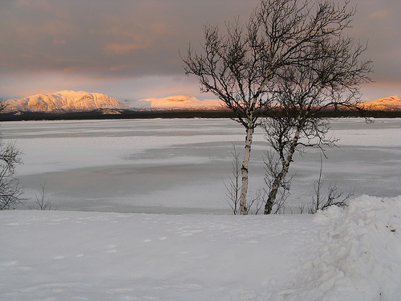

Språka på svenska
Länkar till intressant material på svenska.
Lappland
Jag är ursprungligen från Vilhelmina, men flyttade från obygden 1999. Så här på senhösten i skåne när det regnar och är kallt som fan saknar man snön och äkta vinter, men det tar inte lång stund innan psykosen släpper och man mår bättre igen.

Skämt åsido, det är inte bara hemskt där uppe. Egentligen är det nog bättre än jag vill erkänna för mig själv. Dels slipper man mycket av mänsklighetens mörkaste sidor där hemma, och naturen är svårslagen, speciellt på vintern.
Släkten
Där hemma har jag lämnat kvar en ansenlig klan, och vissa av dem har saker i den digitala verkligheten man kan länka till.
Min syster skriver roliga saker på den här bloggen, den ska ni läsa, annars får ni stryk.
Min kusin driver sidan Vilhelminabloggen, som man kan besöka om man av någon outgrundlig anledning skulle vilja ha en inblick i hur människor tänker i små svenska inlandssamhällen.
Min kompis Jon är även han uppväxt utan elektricitet och eller rinnande vatten, men han är även webapa och har gjort tuneset.com, för att dela musikmixar.. grymt bra, faktiskt.
Släktens specialitet är annars fiske, och där kretsar det hela främst kring affären Grönlunds fiske i Vilhelmina. Min farfarsfar Reinhold Grönlund startade en flugbindningsfabrik, vilket utvecklades till en affär så småningom. Nu tror jag inte den ägs av någon i släkten längre, men affären finns kvar.
En annan släkting har startat en nätbutik, där han säljer varma vinterskor för jägare och fiskare - inte 100% fiskerelaterat, men lite åt samma håll ändå.
Politik
I stort försöker jag hålla mig så långt borta från politiken i sverige, men vissa saker kan man ju inte komma undan. Piratpartiet är nog ganska unikt, men tyvärr allt viktigare i och med polisstatens inmarsch. Man kunde ju tro att den generation som föddes efter andra världskriget, och som växte upp under kalla kriget, skulle ha starkare åsikter kring sådant som frihet och personlig integritet. Trots detta håller den generationen för fullt på att dra på sig bruna skjortor och ridstövlar, och fascistlagarna bara strömmar in. IPRED, FRA, ACTA, det har inget slut...
Samtidigt blir tongångarna allt hårdare mot muslimer, araber och främlingar. De trångsynta växer som mögelsvamp över skåne (framförallt). Rasister och fascister, man kunde ju tro att idiotin skulle minska med tiden.. tyvärr verkar saker röra sig i motsatt riktning. Sverigedemokraterna är en skam.
Några personer som skriver intressant, och bättre än mig, om utvecklingen i sverige är copyriot, hax och Oscar Swartz.